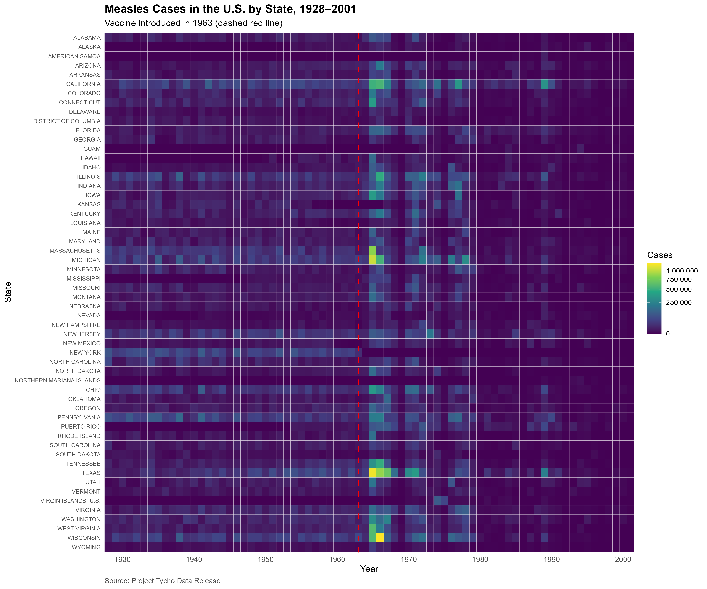
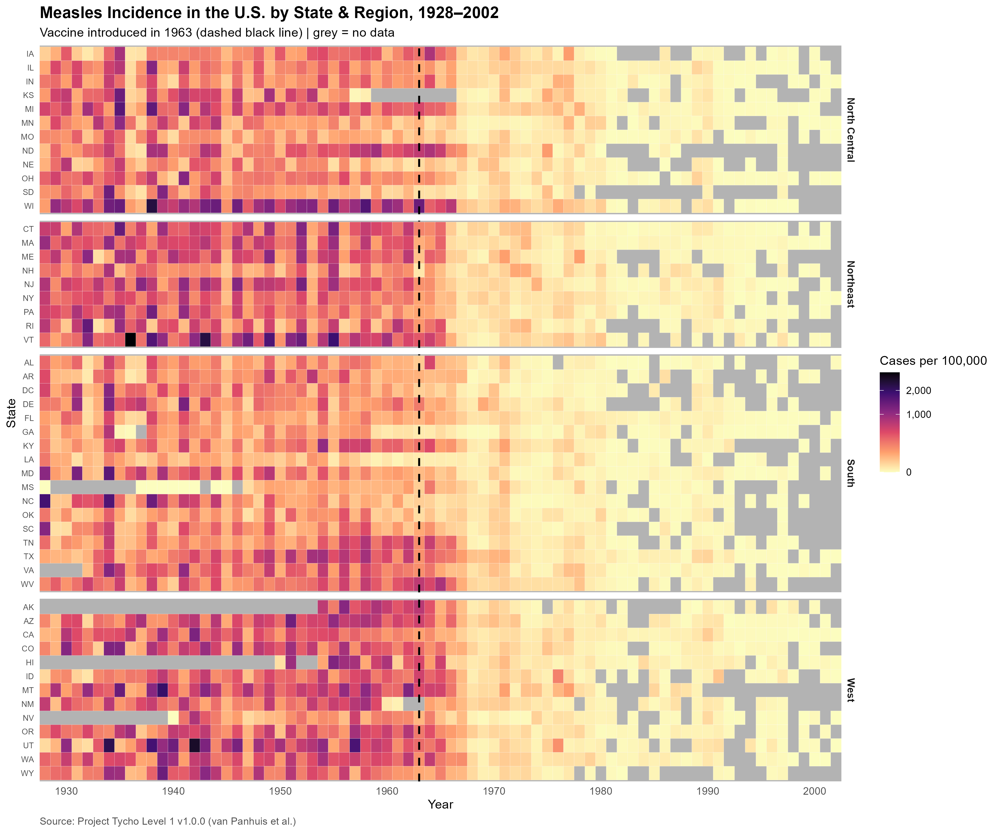

About this exercise
This exercise asked to extend a previous visualisation by adding a categorical variable to create a multivariate plot using faceting. Building on the Module 6 heatmap which already contained three variables (year, state, and incidence rate), I added region as a fourth variable and grouped states by geographic region using facet_grid().
What the Plot Shows
Before 1963, the tiles are mostly pink and orange, with some dark purple and a few black tiles for the highest years, while after the 1963 line, almost every tile turns pale yellow or grey. Dark purple and orange tiles fade out within a few years of the 1963 dashed line, dropping down to pale yellow. The four regions look very similar overall, with all regions showing pink, orange, and purple activity before 1963 and a clear drop to pale yellow within a few years of the vaccine's introduction. Grey missing-data tiles appear mostly in AK, HI, and NV before the 1950s, and spread across all regions after about 1980.
Visualisation Redesign
Master Visualisation

Original visualisation (DeBold & Friedman, 2015).
Module 6 Heatmap

Figure 1 (Module 6 Baseline): Single-panel heatmap showing U.S. measles incidence rates per 100,000 from 1928 to 2002 using state abbreviations and the magma colour scale (adapted from DeBold & Friedman, 2015).
Module 7 Regional Heatmap

Figure 2 (Module 7 Regional Facets): Multivariate heatmap grouping U.S. states into four Census regions (Northeast, South, North Central, and West) using free y-axis scale heights to compare state patterns by region (adapted from DeBold & Friedman, 2015).
What I changed and why
- Regional Grouping and Faceting: I used
facet_grid() to split the 51 jurisdictions into four regional panels because a single vertical list makes it hard to compare patterns across different parts of the country.
- Region Lookup Table: I matched
state.abb to state.region to form a lookup table, and manually added Washington D.C. to the South so every jurisdiction was included.
- Historic Region Naming: R's built-in
state.region vector labels the Midwest as "North Central", which I kept because it reflects the U.S. Census Bureau's historic naming.
- Dynamic Panel Height: I applied
scales = "free_y" and space = "free_y" so panel heights automatically adjust to the number of states in each region, keeping individual tile sizes uniform across the plot.
- Data Limits and Missing Values: Grey tiles mark missing data where no data was reported. The dataset ends in 2002.
- Accessibility: Accessibility was supported by using the perceptually uniform magma palette, clear grey tiles for missing data, standard two-letter state abbreviations, and descriptive alt text for screen readers.
Data Card
| Field |
Description |
| Title |
U.S. Measles Incidence Heatmap by Region (1928–2002) |
| Summary |
Faceted annual heatmap visualising U.S. state-level measles incidence rates per 100,000 population across four regions (Northeast, South, North Central, West) from 1928 to 2002 using the magma colour palette and free y-axis scale heights. Inspired by the Wall Street Journal original graphic (DeBold & Friedman, 2015). |
| Data Sources |
van Panhuis, W. G., Willem, L., & Cross, A. (2018). Project Tycho Level 1 data: Counts of multiple diseases reported in UNITED STATES OF AMERICA, 1916-2011 (Version 1.0.0) 04/10/2026. Zenodo. https://doi.org/10.5281/zenodo.12608992 |
| Mapping |
Variables mapped: Year (x-axis), state (y-axis within region panels), incidence_per_100000 (tile fill colour), and region (facet rows). |
| Important Notes |
1. Region Classification: Uses R's state.region dataset, which categorises states into Northeast, South, North Central, and West ("North Central" is the historical Census name for the Midwest).
2. Washington D.C. Manual Entry: Washington D.C. (DC) was manually appended to the lookup table and assigned to the South region to maintain 51 jurisdictions.
3. Data Limits & Missing Values: Grey tiles indicate missing data where no data was reported, and the dataset ends in 2002.
|
| Access |
https://zenodo.org/records/12608992 |
AI Acknowledgement
Two AI assistants were used during this exercise: Anthropic's Claude and Google's Gemini. Claude suggested the regional lookup structure using state.abb and state.region, assisted with the bind_rows() and left_join() syntax to include Washington D.C., and explained the facet_grid() free scale parameters. Gemini helped organize my rough notes, bullet points, and plot descriptions into structured paragraphs.